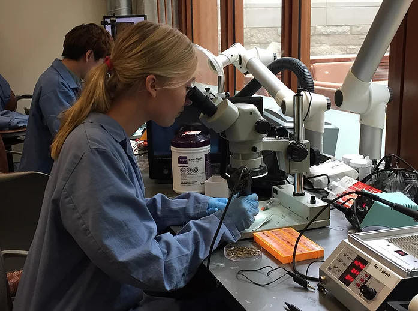
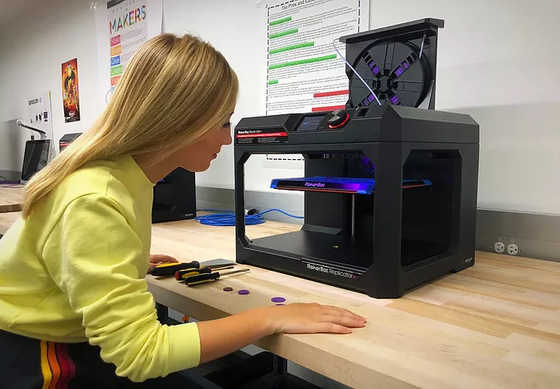

My Skin Track is the world's smallest wearable, battery-free device. I joined the UV sensor team in a group of Dr John Rogers in April 2018 and received a fellowship to redesign the sensor's antenna (which is its biggest component) so it could be smaller while maintaining functionality.
Challenge
Decrease the size of the world's smallest battery-free wearable device
Solution
The smallest, functional antenna for this device
Timeline
5 months
Skills
Software: AutoCAD, SolidWorks, Excel.
Hardware: Soldering under microscope, 3D printing, Oscilloscope, Electroplating
Final Product Insight
Step 1: Understand and Prototype
I began the design process by understanding the dimensions of the current functional antenna. From there, I worked with AutoCAD to design differently shaped antennas with various cross-sectional areas. Some of these shapes were 3-dimensional and required 3d printed supports

Step 2: Test
To test my antenna designs, I assembled a circuit board from scratch. Through this, I learned how to electroplate copper sheets, solder microscopic devices, and program the device.

Step 3: Trouble Shoot
When assembling the device to connect with the evaluation board or the phone, there was an issue with the connection. At first I thought the antenna was too small; however, after testing it, it turned out that one of the capacitors on the pin was broken. Figuring out that issue took much troubleshooting and testing, but I ultimately built the smallest antenna for this device. Figuring out that issue took much troubleshooting and testing, but I ultimately built the smallest antenna for this device.
NDA
My antenna design is being used in another pollution sensor device that is in the process of being published. Please contact me for an interview to discuss the design and outcomes.